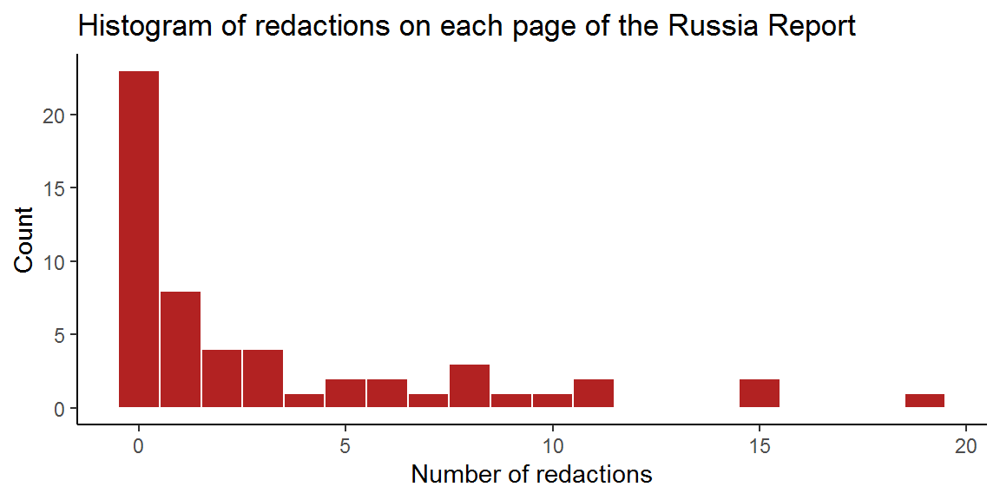

(See the github repo here.)
The report is available on the ISC website and in this github repository.
First, load it into R.
library(tidyverse)
library(knitr)
library(pdftools)
library(stringr)
rr_text <- pdf_text("20200721_HC632_CCS001_CCS1019402408-001_ISC_Russia_Report_Web_Accessible.pdf")The pdf_text command returns a character vector with one element per PDF page. The main report text is on pages 8-42.
I’d like to know where the juicy pages are - one way to index them is by number of reduction marks, "***".
First try for one page to get the hang of it. I had a look at page 10 and there was one.
str_count(rr_text[10], pattern = "\\*\\*\\*")## [1] 1It worked - hurrah. Try for page 8 which has none.
str_count(rr_text[8], pattern = "\\*\\*\\*")## [1] 0And page 12, which has 8:
str_count(rr_text[12], pattern = "\\*\\*\\*")## [1] 8All good. str_count takes a vector, so we can do the whole report in one go:
redact_n <- str_count(rr_text, pattern = "\\*\\*\\*")Let’s stick these in a tibble, alongside the (pdf, as opposed to printed) page number and original page text.
rr_tib <- tibble(page = 1:length(rr_text),
text = rr_text,
redactions = redact_n)Now a histogram of those redactions:
ggplot(rr_tib, aes(x=redactions)) +
geom_histogram(binwidth = 1, fill = "firebrick", color = "white") +
labs(x = "Number of redactions",
y = "Count",
title = "Histogram of redactions on each page of the Russia Report") +
theme_classic()
rr_tib %>%
filter(redactions > 10) %>%
select(page, redactions) %>%
arrange(redactions)## # A tibble: 5 x 2
## page redactions
## <int> <int>
## 1 27 11
## 2 45 11
## 3 20 15
## 4 37 15
## 5 38 19The section on PDF pages 37 and 38 (printed page nums 30 and 31) is the winner: “Rising to the challenge”.
Here’s a link to the pdf pages.
gsub(pattern = "\\*\\*\\*",
replace = "\\*\\*\\*[redacted]\\*\\*\\*",
x = rr_tib$text[37:39]) %>%
writeLines()increasing privacy protection – including ubiquitous encryption – presents particular problems for GCHQ, and in the case of Russia it faces a real SIGINT challenge with the use by the Russian government of [redacted]. 98. In terms of human intelligence (HUMINT) operations, technological advancements that gather and analyse data on individuals have generally increased the difficulty [redacted]. The expansion of smart city technology (such as CCTV, smart sensors and mobile device tracking), and the capability that this provides, has increased the ability of [redacted]. 108 [redacted]. (iii) The risk of escalation 99. Covert activity against any state carries the potential for conflict, and action against a nuclear hostile state even more so given the risk of escalation into diplomatic, economic or even military conflict. The Agencies and Defence Intelligence must therefore be particularly discerning [redacted]. 100. In the case of Russia, the potential for escalation is particularly potent: the Russian regime is paranoid about Western intelligence activities and “is not able to treat objectively” international condemnation of its actions. 109 It views any such moves as Western efforts to encourage internal protest and regime change. The risk is compounded by limitations on UK engagement with the Russian government at official and political levels, making deciphering Russian leadership intent even more difficult. Rising to the challenge (i) Focus 101. Due to the difficulty of [redacted], the Intelligence Community have focused their effort on [redacted] main strategic targets, which they assess will provide insight on the most important strategic topics, with intelligence on the lowest priorities collected on an ‘opportunity-only’ basis. These key targets are [redacted]. 102. [redacted]. 110 103. SIS told us that this means operating with “strategic patience” in terms of both recruiting agents and increasing staff. 111 Whilst there are a [redacted] group of staff working on this issue, SIS was clear that a sudden surge in numbers would not yield results more quickly. 112 It is the difficulty of recruiting Russian agents with the right accesses, and the careful planning, tradecraft and operational security around any prospective agents – so as to ensure their safety and minimise any political risk to HMG – which means that it takes a relatively long time for intelligence efforts to produce results. 108 Oral evidence – GCHQ, [redacted] December 2018. 109 Oral evidence – MI5, [redacted] November 2018. 110 Written evidence – 2018 ICE Plan requirements for Russia. 111 Oral evidence – SIS, [redacted] December 2018. 112 Oral evidence – SIS, [redacted] December 2018; we note that SIS [redacted] and has a “series of protections” around the people who do go into the team. 30
appropriate for HMG to capitalise on its strengthened international relationships and push forward with greater emphasis on exposing Russian Hostile State Activity multilaterally; in our view it must be the latter. 32
Let’s try the tidytext package, which is introduced in a great book by Julia Silge and David Robinson.
library(tidytext)Here’s a tidy tibble with all the words:
rr_words <- rr_tib %>%
unnest_tokens(word, # the name of the new column
text) # the column with text
rr_words## # A tibble: 19,798 x 3
## page redactions word
## <int> <int> <chr>
## 1 1 0 intelligence
## 2 1 0 and
## 3 1 0 security
## 4 1 0 committee
## 5 1 0 of
## 6 1 0 parliament
## 7 1 0 russia
## 8 1 0 hc
## 9 1 0 632
## 10 2 0 intelligence
## # ... with 19,788 more rowsAnd the top 20 most common words:
rr_words %>%
anti_join(stop_words, by = "word") %>%
count(word) %>%
arrange(desc(n)) %>%
head(20) %>%
kable()| word | n |
|---|---|
| intelligence | 193 |
| russia | 147 |
| russian | 143 |
| uk | 103 |
| security | 93 |
| evidence | 90 |
| committee | 72 |
| defence | 70 |
| threat | 60 |
| 2018 | 59 |
| government | 59 |
| cyber | 58 |
| oral | 54 |
| 2019 | 51 |
| gchq | 49 |
| international | 47 |
| national | 46 |
| foreign | 43 |
| mi5 | 43 |
| agencies | 41 |
Is there a relationship between which intelligence service (MI5, MI6, or GCHQ) is mentioned and whether there is a redaction in that sentence?
Again use tidytext, but this time at the sentence level.
rr_sentences <- rr_tib %>%
unnest_sentences(sentence, text, to_lower = FALSE)
rr_sentences %>%
slice_sample(n = 10)## # A tibble: 10 x 3
## page redactions sentence
## <int> <int> <chr>
## 1 16 1 23 We note that Russia’s disinformation efforts against~
## 2 16 1 Equally, the spreading of disinformation is not necessaril~
## 3 36 3 It is difficult for the UK’s democratic and consensus-base~
## 4 17 10 In this instance, employees of the Russian state and Russia~
## 5 30 8 94 He did, however, caution that the threat is wider than R~
## 6 46 1 137.
## 7 20 15 50 We note that Arron Banks became the biggest donor in~
## 8 34 5 We remind the Government that the Justice and Security Act~
## 9 44 7 It is clear that this partnership provides valuable capabil~
## 10 40 2 The US, in 1938, introduced the US Foreign Agents Registra~That worked reasonably well, though citations at the end of sentences confused it (possible to fix with a regex), footnotes need to be addressed separately (sentences beginning numbers, once the aforementioned sentence problem has been fixed), and it probably doesn’t deal with sentences which cross pages - definitely not when there’s a footnote on the first page (possible to fix by removing footnotes then gluing all the sentences together and unnesting again).
Next: code sentences in terms of whether they mention an intel agency.
rr_sentences <- rr_sentences %>%
mutate(
redacted = 0+str_detect(sentence, "\\*\\*\\*"),
mentioned_MI5 = 0+str_detect(sentence, "MI5"),
mentioned_MI6 = 0+str_detect(sentence, "(MI6|SIS)"),
mentioned_GCHQ = 0+str_detect(sentence, "GCHQ"),
mentioned_intel_agency = pmax(mentioned_MI5,
mentioned_MI6,
mentioned_GCHQ),
mentioned_code = paste0(mentioned_MI5,
mentioned_MI6,
mentioned_GCHQ)
)The mentioned_code is a three-bit string: 000 means no agency was mentioned, 100 is MI5 (and no others), 101 is MI6 (and no others), 001 is GCHQ (and no others). All combinations are also captured, e.g., 011 would be MI6 and GCHQ.
Let’s count them:
rr_sentences %>%
count(mentioned_code) %>%
arrange(desc(n)) %>%
kable()| mentioned_code | n |
|---|---|
| 000 | 802 |
| 001 | 33 |
| 100 | 30 |
| 010 | 15 |
| 011 | 11 |
| 111 | 8 |
| 110 | 2 |
| 101 | 1 |
Does mentioning an intel agency (any of them) in a sentence make it more likely that the sentence will be reacted?
mod_redact <- glm(redacted ~ mentioned_intel_agency,
data = rr_sentences, family = binomial)
summary(mod_redact)##
## Call:
## glm(formula = redacted ~ mentioned_intel_agency, family = binomial,
## data = rr_sentences)
##
## Deviance Residuals:
## Min 1Q Median 3Q Max
## -1.0603 -0.5105 -0.5105 -0.5105 2.0504
##
## Coefficients:
## Estimate Std. Error z value Pr(>|z|)
## (Intercept) -1.9718 0.1078 -18.289 < 2e-16 ***
## mentioned_intel_agency 1.6900 0.2290 7.381 1.57e-13 ***
## ---
## Signif. codes: 0 '***' 0.001 '**' 0.01 '*' 0.05 '.' 0.1 ' ' 1
##
## (Dispersion parameter for binomial family taken to be 1)
##
## Null deviance: 782.06 on 901 degrees of freedom
## Residual deviance: 732.19 on 900 degrees of freedom
## AIC: 736.19
##
## Number of Fisher Scoring iterations: 4Yes. The odds of a redaction are 5.4 times greater if an intel service is mentioned.
exp(coef(mod_redact))## (Intercept) mentioned_intel_agency
## 0.1392045 5.4192624How about the various patterns of mention, compared with no mention?
mod_redact1 <- glm(redacted ~ mentioned_code,
data = rr_sentences,
family = binomial)
summary(mod_redact1)##
## Call:
## glm(formula = redacted ~ mentioned_code, family = binomial, data = rr_sentences)
##
## Deviance Residuals:
## Min 1Q Median 3Q Max
## -1.4823 -0.5105 -0.5105 -0.5105 2.0504
##
## Coefficients:
## Estimate Std. Error z value Pr(>|z|)
## (Intercept) -1.9718 0.1078 -18.288 < 2e-16 ***
## mentioned_code001 2.1541 0.3659 5.888 3.91e-09 ***
## mentioned_code010 2.6650 0.5582 4.774 1.81e-06 ***
## mentioned_code011 0.9910 0.6855 1.446 0.148301
## mentioned_code100 1.4253 0.3939 3.618 0.000297 ***
## mentioned_code101 -12.5943 882.7434 -0.014 0.988617
## mentioned_code110 -12.5943 624.1938 -0.020 0.983902
## mentioned_code111 0.0259 1.0745 0.024 0.980768
## ---
## Signif. codes: 0 '***' 0.001 '**' 0.01 '*' 0.05 '.' 0.1 ' ' 1
##
## (Dispersion parameter for binomial family taken to be 1)
##
## Null deviance: 782.06 on 901 degrees of freedom
## Residual deviance: 718.44 on 894 degrees of freedom
## AIC: 734.44
##
## Number of Fisher Scoring iterations: 13There only appears to be a difference if one (and only one) service is mentioned.